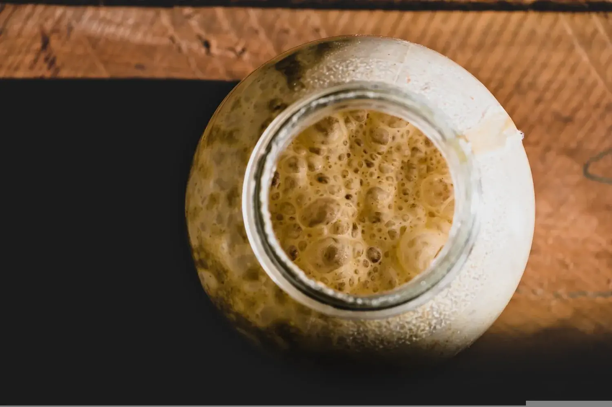

WORKSHOP / HAVONTA EGY SZOMBATON
Kezdj saját kovászt a Hajnallal.
Egy szombat lisztes kézzel, kíváncsi kérdésekkel és a kovász első lépéseivel.

01 / MIRŐL SZÓL?
Nézd meg közelről, hogyan indul a kenyér.
A havi kovászkészítő alkalmon a kovász alapjaival és gondozásával foglalkozunk. Megmutatjuk, mire figyelj az etetésnél, hogyan ismerd fel az aktív kovászt, és hogyan indul a kenyértészta.
Jó első lépés, ha még csak most ismerkedsz a kovászolással. Konkrét időpontot, időtartamot, díjat és férőhelyet a következő alkalom meghirdetésekor teszünk közzé.
KINEK SZÓL?
Az első kovászod előtt.
Ha már sütöttél kenyeret, de a kovász még új neked, itt jó helyen kezded.
MIKOR?
Havonta egy szombaton.
A következő alkalom pontos részletei még egyeztetés alatt állnak.